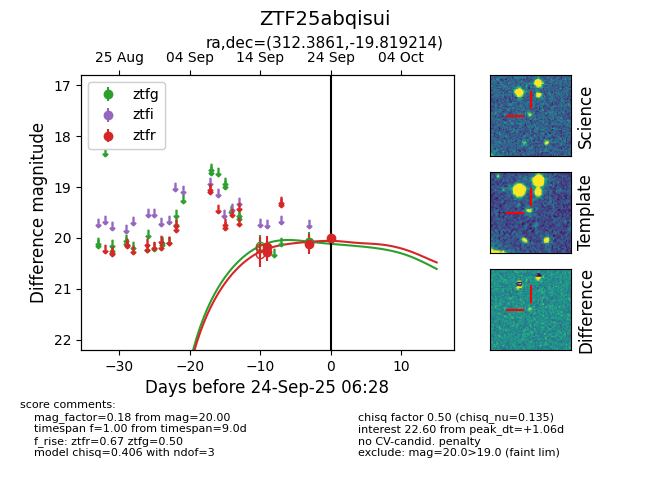
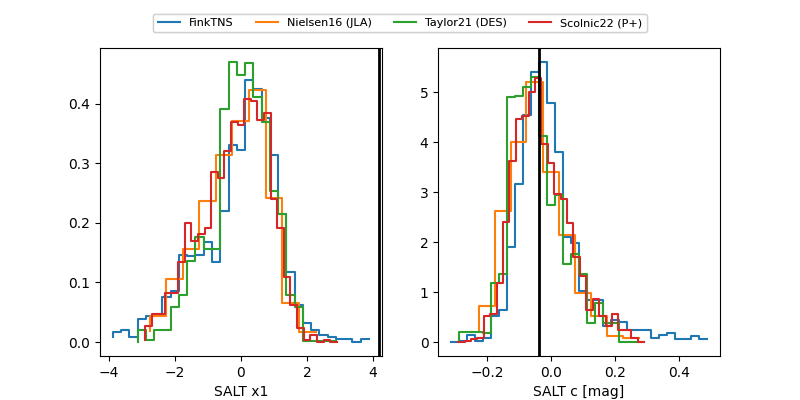

FINK: ZTF25abqisui
Lasair: ZTF25abqisui
ALeRCE: ZTF25abqisui
ZTF25abqisui (ztf,fink)
equatorial (ra, dec) = (312.3861,-19.81921)
galactic (l, b) = (26.6340,-34.55757)


last ztfg=20.08, ztfr=20.00
1 ztfg, 4 ztfr detections